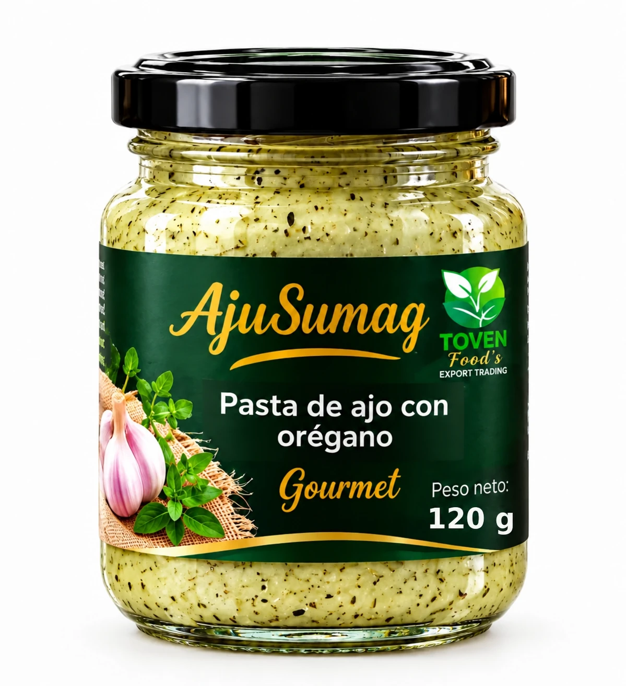
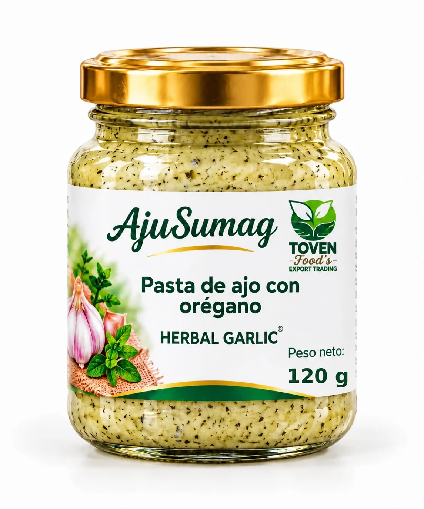

AJUSUMAG · 120 g
Pasta de ajo Gourmet
Pasta de ajo con orégano, presentación Gourmet. Frasco con tapa negra y etiqueta verde.
Consultar presentación →Conoce nuestras presentaciones Gourmet y Herbal Garlic en frascos de 120 g.

Pasta de ajo con orégano, presentación Gourmet. Frasco con tapa negra y etiqueta verde.
Consultar presentación →
Pasta de ajo con orégano, presentación Herbal Garlic. Frasco con tapa dorada y etiqueta clara.
Consultar presentación →